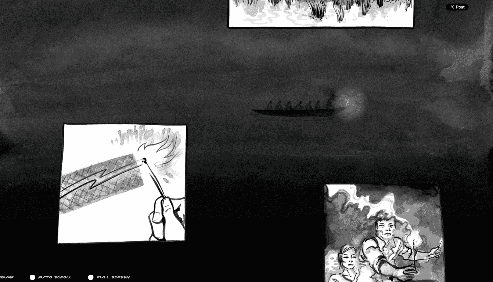
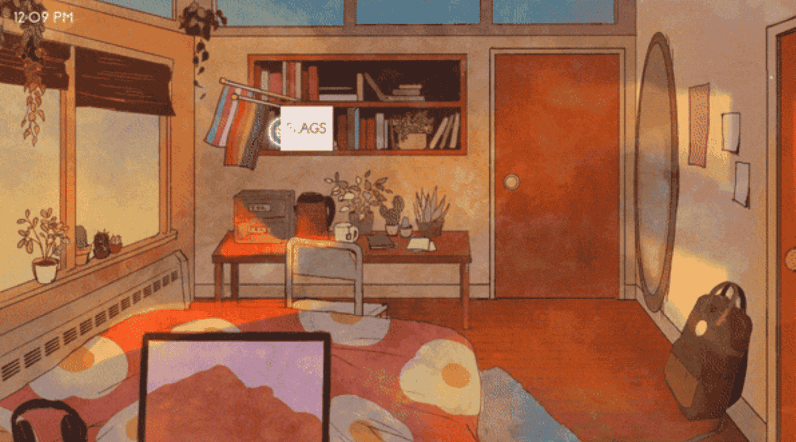
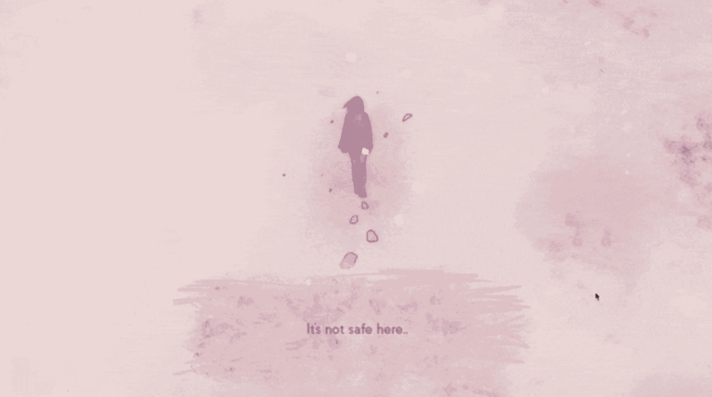

The Boat
The main element I want to take away from this project is how they make the story dynamic and animated through animate on scroll. Things in the background, like the boat, are slowly moving across the page much slower than the main content that is brighter in the front. Together they create a more immersive experience.
The interface design is strong because it uses contrast, layering, and scale to guide the viewer through the story without relying only on blocks of text. The interaction design makes the act of scrolling feel connected to the story because the user is not just moving down a page, but moving through a shifting scene. One thing to be careful of is that sometimes they have so much going on to the point that it is distracting, but I want to take the movement and tone through highlighting, movement, and color that this designer created into my project, specifically the first part with newspapers, perhaps with a slow political upheaval or protest happening in the background.


missed messages
This is a game that is playable in the web browser once downloaded. I want to use a similar format for the main part of my project. The box at the bottom with the player’s thoughts and the scene around that with hoverable and intractable objects is the same type of visual format I want to use.
The interface design works well because the scene, dialogue box, and clickable objects all feel like parts of one emotional environment rather than separate pieces. The interaction design is simple enough that the player can understand what to do quickly, but the hoverable and interactive areas still make the scene feel exploratory. However, the art style is different than I want and I don’t like that the mouse moving makes the scene picture move as well, mine would be more static except for zooming into a specific part of the screen.